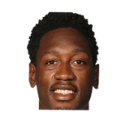

“Brandon Jennings can have his ideas and opinions, but to act like it came from me is the wildest part. I don't talk to this guy. He's got his own opinions on the league, which is fine. But the response to that was like I was saying it. Like, why are [people] even spending this much time worrying about ... Does KD deserve better? Or he doesn't deserve better? Like, why are you even talking about this?”

What NBA players and coaches have said about Brandon Jennings
18 quotes about Brandon Jennings from 15 players, coaches and executives, newest first. Each one links to its original source.
Best quotes
In talking with Bucks.com, Hammond said that is not the plan.
“We like our team, we really like Brandon and Monta. We like them playing together, we think they are a dynamic backcourt. And our hope is we can keep that back court together.”
“I just think that people assume that with Reggie (Jackson) here and the way Brandon played last year, I think people just make that assumption. He's no more or less available than anybody else we have.”
What Brandon Jennings has said about other players and coaches →
Quotes per season
Who talks about Brandon Jennings most
- Stan Van Gundy on Brandon Jennings4 quotes
 Carmelo Anthony1 quote
Carmelo Anthony1 quote Chauncey Billups1 quote
Chauncey Billups1 quote- Ernie Grunfeld1 quote
 Jared Dudley1 quote
Jared Dudley1 quote Javale McGee1 quote
Javale McGee1 quote Jeff Hornacek1 quote
Jeff Hornacek1 quote- Jim Boylan1 quote
, Public domain, via Wikimedia Commons") Joe Dumars1 quote
Joe Dumars1 quote- John Hammond1 quote
 Kevin Durant1 quote
Kevin Durant1 quote
Larry Sanders1 quote
Back and forth
2023-24
1 quote“Brandon Jennings can have his ideas and opinions, but to act like it came from me is the wildest part. I don't talk to this guy. He's got his own opinions on the league, which is fine. But the response to that was like I was saying it. Like, why are [people] even spending this much time worrying about ... Does KD deserve better? Or he doesn't deserve better? Like, why are you even talking about this?”
2019-20
1 quote“I played with Brandon Jennings, Monte Ellis, Drew Gooden, Keyon Dooling, Andrew Bogut and I had great teammates,”
Larry Sanders on Brandon Jennings, Keyon Dooling, Drew Gooden, Andrew BogutCBS Chicago
2016-17
4 quotesChris Haynes:JaVale McGee on Jennings' comment:
“I'm glad Brandon fouled me. I was going to air ball that three. Shout out to Brandon Jennings.”
“Brandon gives us playmaking ability and experience at the guard position while adding another scoring option as well,”
“I still don’t know if it was more Brandon or the organization or a mutual agreement.”
Ian Begley:Hornacek:
“(Just) because Brandon was waived doesn’t mean that we’re not trying to win these games. We feel Ron Baker can fill right in.”
2015-16
5 quotesThe Orlando Magic have acquired guard Brandon Jennings and forward Ersan Ilyasova from the Detroit Pistons in exchange for forward Tobias Harris, General Manager Rob Hennigan announced today.
“Brandon (Jennings) and Ersan (Ilyasova) are two veterans that will help balance our roster and provide valuable experience to our team,”
But Stan Van Gundy sees room for both – certainly for the remainder of this season, as Jennings ramps up to a more substantial role, and even beyond.
“Our plan right now is that Brandon can help us make a playoff push,”
“I just think that people assume that with Reggie (Jackson) here and the way Brandon played last year, I think people just make that assumption. He's no more or less available than anybody else we have.”
“Reggie is big enough (6-feet-3) to guard guys off the ball and everything else. It just gives you two playmakers on the floor together. I think they can be pretty dynamic, but we'll just have to see where Brandon is when he comes back.”
Van Gundy told WMGC-FM(105.1).
“We don't know where Brandon's gonna be health-wise. Right now, he's still recovering.”
2014-15
1 quoteAnthony Slater:Reggie Jackson:
“Anyone who watches the game, Brandon Jennings destroyed Reggie Jackson. Lost the matchup and that's why we lost tonight.”
2013-14
2 quotesAnd Billups makes a point to approach Jennings when he has words of wisdom.
“I really enjoy working with Brandon and trying to teach him to take the reins and taking responsibility for being a leader,”
Vincent Goodwill:Dumars on his previous denials on Jennings:
“We started talking last Friday. John asked 'do you have any interest in BJ' I said,”
2012-13
3 quotes“I talk to a lot of people around the league, a lot of people around Brandon. I don't get that feeling from him; I don't get that feeling from his people.”
Jim Boylan on Brandon JenningsMilwaukee Journal-Sentinel
In talking with Bucks.com, Hammond said that is not the plan.
“We like our team, we really like Brandon and Monta. We like them playing together, we think they are a dynamic backcourt. And our hope is we can keep that back court together.”
Evans Clinchy:Skiles on Monta/Jennings:
“They get along, they pass the ball to each other, they move it to their teammates. I don't see any issues.”
2011-12
1 quoteLike a surprising number of things now do, the idea for Impact Basketball Competitive Training Series—a two-week long semi-league taking place at trainer Joe Abunassar’s Las Vegas, NV, Impact Basketball facility—was polished if not born on Twitter.
“I was talking to Brandon Jennings on Twitter and told him that we were going to do something,”